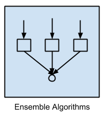
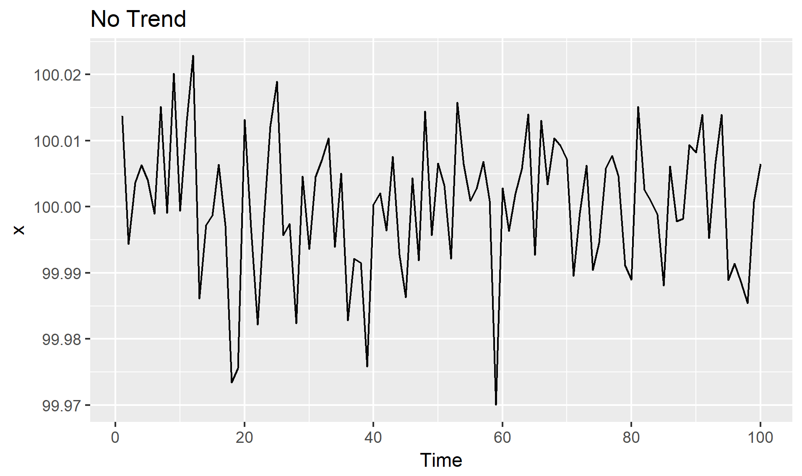
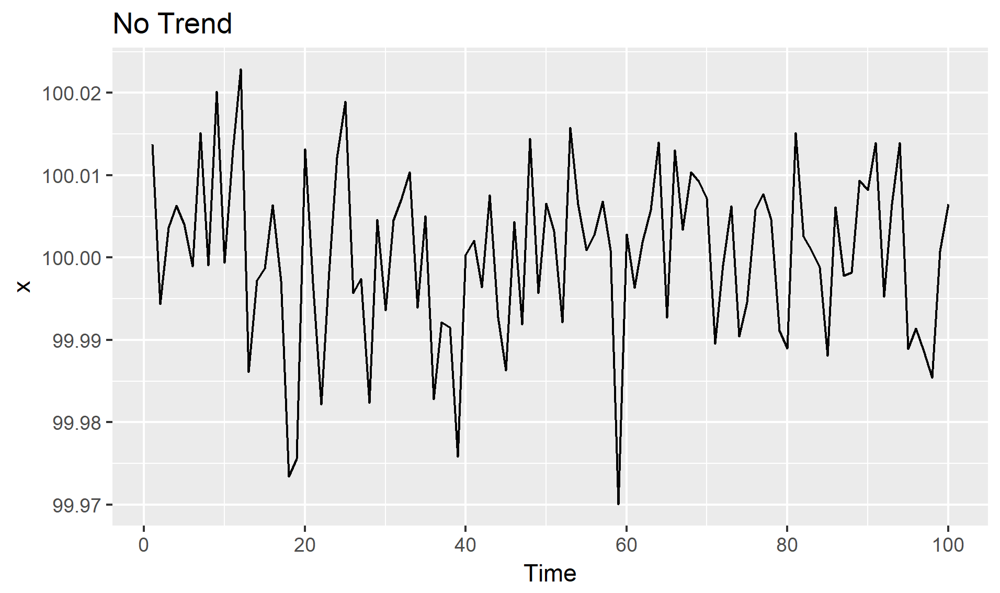

학습방향과 알고리즘(Learning Style and Algorithms)¶
학습방향¶
알고리즘은 크게 3 가지 또는 4 가지 문제만을 해결할 수 있음
내가 풀어야 할 문제가 무엇인지 알면 문제 기획/접근/해결 방향은 단순
문제가 어디에 속하는지 -> “분석기획(가설/방향)” 가능
알고리즘마다 입력은 무엇인지 -> “데이터전처리(준비)” 가능
알고리즘마다 출력은 무엇인지 -> “결과해석(설명/검증)” 가능
기계학습의 3가지 분류:
기계학습의 4가지 분류:
각 분류별 특성과 역할:

- |
Supervised Learning |
Unsupervised Learning |
Semi-supervised Learning |
|---|---|---|---|
- |
|
|
|
Input Data |
labeled |
unlabeled |
labeled + unlabeled |
Output Result |
labeled |
unlabeled |
labeled + unlabeled |


학습방향에 따른 알고리즘 (Summary)¶
Supervised Learning¶
Regression Algorithms |
Instance-based Algorithms |
Regularization Algorithms |
Decision Tree Algorithms |
Bayesian Algorithms |
Artificial Neural Network Algorithms |
|---|---|---|---|---|---|
|
|
|
|
|
|
Ordinary Least Squares Regression (OLSR) |
k-Nearest Neighbor (kNN) |
Ridge Regression |
Classification and Regression Tree (CART) |
Naive Bayes |
Perceptron |
Linear Regression |
Learning Vector Quantization (LVQ) |
Least Absolute Shrinkage and Selection Operator (LASSO) |
Iterative Dichotomiser 3 (ID3) |
Gaussian Naive Bayes |
Back-Propagation |
Logistic Regression |
Self-Organizing Map (SOM) |
Elastic Net |
C4.5 and C5.0 (different versions of a powerful approach) |
Multinomial Naive Bayes |
Hopfield Network |
Stepwise Regression |
Locally Weighted Learning (LWL) |
Least-Angle Regression (LARS) |
Chi-squared Automatic Interaction Detection (CHAID) |
Averaged One-Dependence Estimators (AODE) |
Radial Basis Function Network (RBFN) |
Multivariate Adaptive Regression Splines (MARS) |
- |
- |
Decision Stump |
Bayesian Belief Network (BBN) |
- |
Locally Estimated Scatterplot Smoothing (LOESS) |
- |
- |
M5 |
Bayesian Network (BN) |
- |
- |
- |
- |
Conditional Decision Trees |
- |
- |


Unsupervised Learning¶
Clustering Algorithms |
Association Rule Learning Algorithms |
Dimensionality Reduction Algorithms |
Ensemble Algorithms |
Deep Learning Algorithms |
|---|---|---|---|---|
|
|
|
 |
|
k-Means |
Apriori algorithm |
Principal Component Analysis (PCA) |
Boosting |
Deep Boltzmann Machine (DBM) |
k-Medians |
Eclat algorithm |
Principal Component Regression (PCR) |
Bootstrapped Aggregation (Bagging) |
Deep Belief Networks (DBN) |
Expectation Maximisation (EM) |
- |
Partial Least Squares Regression (PLSR) |
AdaBoost |
Convolutional Neural Network (CNN) |
Hierarchical Clustering |
- |
Sammon Mapping |
Stacked Generalization (blending) |
Stacked Auto-Encoders |
- |
- |
Multidimensional Scaling (MDS) |
Gradient Boosting Machines (GBM) |
- |
- |
- |
Projection Pursuit |
Gradient Boosted Regression Trees (GBRT) |
- |
- |
- |
Linear Discriminant Analysis (LDA) |
Random Forest |
- |
- |
- |
Mixture Discriminant Analysis (MDA) |
- |
- |
- |
- |
Quadratic Discriminant Analysis (QDA) |
- |
- |
- |
- |
Flexible Discriminant Analysis (FDA) |
- |
- |


Time-series Learning¶
“정확성 vs. 설명력 반비례 관계 존재”
분석단계 비교: 선형(회귀분석) vs 비선형(신경망)
- |
Linear Model |
Neural Network Model |
|---|---|---|
모델특징 |
- |
- |
분석목적 |
선형성파악(설명가능) |
비선형성파악(설명불가) |
이론적(수학적) 근거 |
존재 |
미존재 |
분석단계 특징(전처리) |
- |
- |
데이터 로딩 |
Panel Data |
다양(운이좋으면 Panel) |
데이터 빈칸 채우기/삭제 |
분석필요 |
분석필요 |
데이터 컬럼 추가/삭제 |
분석필요+민감 |
분석필요+덜민감 |
데이터 분리 |
Train/Validate/Test |
Train/Validate/Test |
데이터 스케일링 |
분석필요/미필요 |
분석필요 |
분석단계 특징(모델링) |
- |
- |
입력 확인 및 변환 |
Panel Data |
다양(정해지지 않음) |
데이터 모델연결 |
자동화 |
반자동화 |
비용함수(Cost) |
최소제곱에러(MSE) |
다양 |
추정함수(Optimizer) |
고정(미분1회 대체가능) |
다양(미분지속) |
분석단계 특징(검증) |
- |
- |
정확성지표 |
다양 |
다양 |
잔차진단활용 |
가능(분석필요) |
불가 |
분석단계 특징(결과해석) |
- |
- |
관계성 시각화/영향력 해석 |
가능(분석필요) |
불가 |
시계열 데이터/분석과 기계학습의 차이¶
확률 과정(Stochastic Process): 상관 관계를 가지는 무한개의 변수의 순서열
시계열 데이터(Time Series Data): 일정한 시간 간격으로 기록된 확률과정의 샘플
독립변수(\(x_t\))와 알고자 하는 종속변수(\(y_t\))가 시간단위(\(t\))를 포함
모델의 출력(Output)은 \(y\)의 시간 \(t\)에서의 예측값(\(\hat{y_t}\))
기계학습과 시계열예측 간 큰 차이가 존재하기에, 시계열 변수생성은 약간의 조정들을 요구함
대표적인 시계열 변수추출 방향 7종 (Feature Engineering)¶
데이터 과학자로서 이미 수동/자동 변수 생성(Feature Engineering)에 익숙하지만, 신규 변수를 생성하는 것은 분석에서 가장 중요하고 시간이 많이 걸리는 작업 중 하나입니다.
“변수 생성시 주의할 점!”
미래의 실제 종속변수 예측값이 어떤 독립/종속변수의 FE에 의해 효과가 있을지 단정할 수 없음
독립변수의 예측값을 FE를 통해 생성될 수 있지만 이는 종속변수의 예측에 오류증가를 야기할 수 있음
빈도(Frequency): 계절성 패턴(Seasonality)이 나타나기 전까지의 데이터 갯수로 사람이 정해야 함
예시: 계설성이 1년에 1회 나타날 경우,
Data |
frequency |
|---|---|
Annual |
1 |
Quarterly |
4 |
Monthly |
12 |
Weekly |
52 |
예시: 데이터가 “일(Day)” 단위로 수집된 경우,
Seasonality |
frequency |
|---|---|
Weekly |
7 |
Annual |
365 |
예시: 데이터가 “분(Minute)” 단위로 수집된 경우,
Seasonality |
frequency |
|---|---|
Hourly |
60 |
Daily |
24 x 60 |
Weekly |
24 x 60 x 7 |
Annual |
24 x 60 x 365 |
빈도 설정을 위한 Python 함수 옵션:
Alias |
Description |
|---|---|
B |
Business day |
D |
Calendar day |
W |
Weekly |
M |
Month end |
Q |
Quarter end |
A |
Year end |
BA |
Business year end |
AS |
Year start |
H |
Hourly frequency |
T, min |
Minutely frequency |
S |
Secondly frequency |
L, ms |
Millisecond frequency |
U, us |
Microsecond frequency |
N, ns |
Nanosecond frequency |
Method |
Description |
|---|---|
bfill |
Backward fill |
count |
Count of values |
ffill |
Forward fill |
first |
First valid data value |
last |
Last valid data value |
max |
Maximum data value |
mean |
Mean of values in time range |
median |
Median of values in time range |
min |
Minimum data value |
nunique |
Number of unique values |
ohlc |
Opening value, highest value, lowest value, closing value |
pad |
Same as forward fill |
std |
Standard deviation of values |
sum |
Sum of values |
var |
Variance of values |
추세(Trend, \(T_t\)): 시계열이 시간에 따라 증가, 감소 또는 일정 수준을 유지하는 경우
(수학적 이해)
확률과정의 결정론적 기댓값 함수를 알아내는 것
확률과정(\(Y_t\))이 추정이 가능한 결정론적 추세함수(\(f(t)\))와 정상확률과정(\(Y^s_t\))의 합
$Y_t = f(t) + Y^s_t$

 

계절성(Seasonality, \(S_t\)): 일정한 빈도로 주기적으로 반복되는 패턴(\(m\)), 특정한 달/요일에 따라 기대값이 달라지는 것
계설정 반영 방법큰 크게 2가지: 수치값 그대로, 발생 시점으로 분리
주기적 패턴이 12개월마다 반복(\(m\) = 12)

주기(Cycle, \(C_t\)): 일정하지 않은 빈도로 발생하는 패턴(계절성)
빈도가 1인 경우에도 발생 가능(\(m\) = 1).

시계열 분해(추세/계절성/잔차(Residual, \(e_t\))):
\(Y_t = T + S + R\)

더미변수(Dummy Variables, \(D_i\)): 이진수(0 또는 1)의 형태로 변수를 생성하는 것으로 휴일, 이벤트, 캠페인, Outlier 등을 생성 가능
생성법:
범주형 변수(Categorical Variable)의 기준값을 미리 결정 (ex. 계절일 경우 봄)
기준값을 제외한 채 더미변수를 생성 (ex. \(D_1\) = 여름, \(D_2\) = 가을, \(D_3\) = 겨울)
각 더미변수의 값을 0 또는 1로 채우며 1은 각 더미변수의 정의와 같음을 의미
확실한 패턴이 존재하는 경우에만 효과가 있으며 오히려 모델의 오류를 증가시킬 수 있음
지연값(Lagged values, \(Lag_t(X_1)\)): 변수의 지연된 값을 독립변수로 반영하는 것으로,ARIMA/VAR/NNAR 등이 활용
시간변수: 시간변수를 미시/거시 적으로 분리하거나 통합하여 생성된 변수
요약:
시계열 구성요소는 각 변수의 시간패턴을 파악하는데 중요
FE를 통해 생성된 변수의 입력(Input) 형태로 모형 선택을 하는데 필요
생성된 변수의 패턴이 기존 모델에서 반영하지 않던 패턴이라면 예측 성능을 높임
예측성능 향상 뿐 아니라 결과를 해석하고 해당 속성을 분석하며 가능한 원인 식별에 도움
데이터준비 방향¶
비시계열 데이터준비(General Validation)¶
일반적준비(Simple Validation):
훈련셋(Training set): 이름처럼 일반적으로 전체 데이터의 60%를 사용하여 기계학습을 하는데 사용됨
검증셋(Validation set):
개발셋이라고도 하며, 일반적으로 전체 데이터의 20%를 사용함
훈련된 여러가지 모델들의 성능을 테스트 하는데 사용되며 모델 선택의 기준이 됨
테스트셋(Testing set): 전체 데이터의 20%를 사용하며 최종 모델의 정확성을 확인하는 목적에 사용됨

\(K\)교차검사(\(K\)-fold Cross Validation):
훈련셋을 복원없이 \(K\)개로 분리한 후, \(K-1\)는 하위훈련셋으로 나머지 1개는 검증셋으로 사용함
검증셋과 하위훈련셋을 번갈아가면서 \(K\)번 반복하여 각 모델별로 \(K\)개의 성능 추정치를 계산
\(K\)개의 성능 추정치 평균을 최종 모델 성능 기준으로 사용
간단한준비(Holdout Validation):
훈련셋(Training set): 일반적으로 전체 데이터의 70% 사용
테스트셋(Testing set): 일반적으로 전체 데이터의 30% 사용
\(K\)-fold vs. Random-subsamples vs. Leave-one-out vs. Leave-\(p\)-out
\(K\)-fold

Random-subsamples

Leave-one-out

Leave-\(p\)-out
시계열 데이터준비(Time Series Validation)¶
시계열 데이터인 경우 랜덤성(set.seed)을 부여하면 안되고 시간축 유지가 핵심! - 훈련셋(Training set): 가장 오래된 데이터 - 검증셋(Validation set): 그 다음 최근 데이터 - 테스트셋(Testing set): 가장 최신의 데이터

과거 정확성이 높더라도 미래의 정확성 보장할 수 없기에, 미래 모든시기 검증 추천! - 1스텝 교차검사(One-step Ahead Cross-validation)
- 2스텝 교차검사(Two-step Ahead Cross-validation)
시계열 알고리즘의 2가지 차별화 방향¶
“학습된 도메인 영역 내의 패턴 뿐 아니라 외부 시점의로 데이터를 확장 할 수 있어야 시계열 알고리즘”
시계열 데이터나 FE를 통해 생성된 변수들은 미래시점을 생성시킬 수 있음
대다수의 기계학습 알고리즘은 학습된 도메인 영역에서의 패턴만을 추출
“시계열 알고리즘은 점추정이 아닌 구간추정 알고리즘으로 설명력 효과에 뿌리를 둠”
대부분의 기계학습 모델은 통계분포에 기반하지 않기 때문에 점추정 알고리즘
신뢰구간의 정확성은 확신 할 수 없지만 점추정 보다 다양한 해석을 가능하게 함
“정확성 vs. 설명력 반비례 관계 존재”

대표적 알고리즘 예시:
Dynamic Linear Model:
Bayesian-based Models
Generalized Autoregressive Conditional Heteroskedasticity(GARCH)
Nueral Network Model:
Neural Networks Autoregression(NNAR)
Recurrent Neural Network(RNN)
Long Short-Term Memory(LSTM)
Gated Recurrent Unit(GRU)
검증지표(Evaluation Metrics)과 잔차진단(Residuals Diagnostics) 방향¶
“예측 분석 이후 예측이 잘 되었는지 그리고 데이터의 시간패턴이 잘 추출 되었는지 평가하는 것이 중요합니다.”
검증지표는 예측값과 실제값이 얼마나 비슷한지를 측정하는 것이며, 모형이 시간특성을 잘 잡아내는지를 측정하지는 않음
시간특성 패턴이 잘 추출되었는지 확인하기 위해선 잔차(또는 에러) 진단을 통해 백색잡음(White Noise)과 얼마나 유사한지 측정=> ”Residual Diagnostics” or “Error Analysis”
검증지표(Evaluation Metrics)¶
종류
1) 문제해결 검증지표: 문제를 잘 풀었는지 평가하기 위한 기준
Statistical Metrics: Correlation
입력(Input): -무한대 ~ 무한대 범위의 연속형 값
출력(Output): 이론적으론 -1 ~ 1 범위의 연속형 값
Regression Metrics: MSE, MSPE, RMSE, RMSLE, MAE, MAPE, MPE, R^2, Adjusted R^&2, … (Y의 범위가 무한대가 가능한 연속형일때)
입력(Input): -무한대 ~ 무한대 범위의 연속형 값
출력(Output): 이론적으론 0 ~ 무한대 범위의 연속형 값
Classification Metrics: Log Loss, Cross-entropy, ROC, AUC, Gini, Confusion Matrix, Accuracy, Precision, Recall, F1-score, Classification Report, KS Statistic, Concordant-Discordant Ratio … (Y가 2개 또는 그 이상개수의 이산형일때)
입력(Input): -무한대 ~ 무한대 범위의 연속형 값
출력(Output): 알고리즘 종류에 따라 출력이 달라질 수 있음
확률(Probability): 0 ~ 1 범위의 연속형 값 (Logistic Regression, Random Forest, Gradient Boosting, Adaboost, …)
집단(Class): 0 또는 1의 이산형 값 (SVM, KNN, …)
Ranking Metrics: Gain, Lift, MRR, DCG, NDCG, …
Computer Vision Metrics: PSNR, SSIM, IoU, …
NLP Metrics: Perplexity, BLEU score, …
Deep Learning Related Metrics: Inception score, Frechet Inception distance, …
Real Problem: ??? (현실적으로 어떻게 문제를 검증할지는 현실문제에 맞추어 추가/변경하여 만들어야함)
2) 알고리즘비교 검증지표: 어떤 알고리즘이 더 성능이 좋은지 평가하기 위한 기준
: 알고리즘 성능이 좋은것과 문제해결이 가능한 것은 다르기에, 알고리즘 검증지표는 없어도 되지만 문제해결 검증지표는 반드시 필요
: (이론적)알고리즘은 그저 특정 검증지표를 사용하여 만들어짐
Regression: MSE
Logistic Regression: Log Loss
Random Forest: ???
ARIMA: ???
CNN, RNN: ???
예시:
Regression Metrics: MSE, MSPE, RMSE, RMSLE, MAE, MAPE, MPE, R^2, Adjusted R^&2, … (Y의 범위가 무한대가 가능한 연속형일때)


Classification Metrics: Log Loss, Cross-entropy, ROC, AUC, Gini, Confusion Matrix, Accuracy, Precision, Recall, F1-score, Classification Report, KS Statistic, Concordant-Discordant Ratio … (Y가 2개 또는 그 이상개수의 이산형일때)
잔차진단(Residual Diagnostics)¶
“백색잡음(White Noise)는 2가지의 속성을 만족해야 하며 하나라도 만족하지 못하면 모델이 개선의 여지가 있음을 의미합니다.”
백색잡음(White Noise, \(WN\)):

1) 잔차들은 정규분포이고, (unbiased) 평균 0과 일정한 분산을 가져야 함:
\begin{align*} {\epsilon_t : t = \dots, -2, -1, 0, 1, 2, \dots} \sim N(0,\sigma^2_{\epsilon_t}) \ \end{align*} \begin{align*} where~~ \epsilon_t \sim i.i.d(independent~and~identically~distributed) \ \end{align*} \begin{align*} \epsilon_t = Y_t - \hat{Y_t}, ;; E(\epsilon_t) = 0, ;; Var(\epsilon_t) = \sigma^2_{\epsilon_t} \ \end{align*} \begin{align*} Cov(\epsilon_s, \epsilon_k) = 0~for~different~times!(s \ne k) \end{align*}
2) 잔차들이 시간의 흐름에 따라 상관성이 없어야 함:
자기상관함수(Autocorrelation Fundtion(ACF))를 통해 \(Autocorrelation~=~0\)인지 확인
공분산(Covariance):
$Cov(\epsilon_s, \epsilon_k)$ = $E[(\epsilon_s-E(\epsilon_s))$$(\epsilon_k-E(\epsilon_k))]$ = $\gamma_{s,k}$ - 자기상관함수(Autocorrelation Function):$Corr(\epsilon_s, \epsilon_k)$ = $\dfrac{Cov(\epsilon_s, \epsilon_k)}{\sqrt{Var(\epsilon_s)Var(\epsilon_k)}}$ = $\dfrac{\gamma_{s,k}}{\sqrt{\gamma_s \gamma_k}}$ - 편자기상관함수(Partial Autocorrelation Function): $s$와 $k$사이의 상관성을 제거한 자기상관함수$Corr[(\epsilon_s-\hat{\epsilon}_s, \epsilon_{s-t}-\hat{\epsilon}_{s-t})]$ for $1 회귀분석 가정과의 비교:
종속변수와 독립변수 간에 선형성의 관계를 가져야 함
독립변수들 간에 서로 독립이어야 함
잔차의 분포가 정규분포이어야 함
잔차들이 서로 독립적으로 움직여야 함
잔차들의 분산이 서로 같아야 함
자기상관 테스트 활용예시:
Apply a portmanteau test to check the hypothesis that residuals are uncorrelated.
- Plot the Autocorrelation function (ACF) and evaluate that at least 95% of the spikes are on the interval.
시계열이 분석효과에 도움 될 시간영역(해상도)을 선택해야 함¶
예측 정확성이 높은 시간영역을 선택하는 것이 좋습니다.

활용예시:
분석목적: 연간단위 비즈니스 목표를 예측
Aim for the most granular level possible.
일반적으로 월별 또는 분기별 데이터를 사용하면 연간 데이터보다 나은 예측이 가능할 것
월/분기별 예측치를 연간으로 환산시 오류가 늘어날 것 같지만 실제로는 반대의 경우가 많음
만약 너무 세분화된 시간영역을 사용할 시 오류가 증가될 수 있음
연간 비즈니스 목표를 예측하는데 일별/시간별/분별/이하단위의 데이터를 사용하면 도움이 될까?
시계열 데이터/분석은 높은 정확도를 낳거나 높은 에러를 발생시킴¶
높은정확도(High Accuracy): 과거 패턴이 미래에도 그대로 유지가 된다면 예측 정확도가 높아짐
높은에러(High Error): 패턴이 점차적으로 또는 갑자기 변경되면 예측값은 실제값에서 크게 벗어날 수 있음
Black Swan: 일어날 것 같지 않은 일이 일어나는 현상
White Swan: 과거 경험들로 충분히 예상되는 위기지만 대응책이 없고 반복될 현상
Gray Swan: 과거 경험들로 충분히 예상되지만 발생되면 충격이 지속되는 현상
시계열 데이터 관리는 장/단점 존재¶
수천/수백만/수십억 데이터를 기계학습에 사용할 수 있지만 시계열로 데이터를 정리하면 데이터 감소 발생가능
모든 시간범위가 예측성능에 도움되지 않을 수 있기에 특정기간의 시간영역 분석만 필요할 수도 있음
고성능 시계열 Database 필요:
(시계열) 회귀분석 요약¶
“\(t\)개의 값을 가지는 \(k\)차원 독립변수 \(X_i\)와 이에 대응하는 종속변수 \(Y\)간의 관계를 정량적으로 찾는 알고리즘”
모델링¶
알고리즘: 독립 변수나 종속 변수가 반드시 대칭 분포를 보여야 한다는 가정은 없지만 정규 분포에 가까운 분포를 보일 수록 선형회귀모형의 성능이 좋아지는 경우가 많음
비선형변수 효과: 로그 또는 제곱근 등의 변환된 변수 사용시 회귀분석 성능 향상 가능
독립 변수나 종속 변수가 심하게 한쪽으로 치우친 분포를 보이는 경우
독립 변수와 종속 변수간의 관계가 곱셈 혹은 나눗셉으로 연결된 경우
종속 변수와 예측치가 비선형 관계를 보이는 경우
검증방항(계수추정)¶
결정론적 모형(Deterministic Model)¶
“잔차제곱합(Residual Sum of Squares)을 최소로하는 \(\beta\)를 추정”
1) 잔차벡터(Residual Vector):
2) 잔차제곱합(Residual Sum of Squares):
3) 잔차제곱합의 그레디언트(Gradient):
4) 잔차가 최소가 되는 최적화 조건은 최저점에서의 그레디언트(미분,기울기)이 0이 되어야 함:
5) 최적화를 위한 잔차제곱합의 그레디언트(Gradient):
6) 추정된 계수:
Summary:
\(X^TX\) 행렬이 역행렬이 존재해야 해 추정/존재 가능
역행렬이 미존재
= \(X\)가 서로 독립이 아님
= \(X\)가 Full Rank가 아님
= \(X^TX\)가 양의 정부호(Positive Definite)가 아님
확률론적 모형(Probabilistic Model)¶
“종속변수의 발생가능성을 최대(최소)로하는 \(\beta\)를 추정”
필요성: 결정론적 선형 회귀모형(OLS)는 데이터의 확률론적 가정이 없기에 단하나의 가중치(점추정)를 계산하나, 이 가중치의 신뢰도(구간추정)는 확인할 수 없음
예시: 집값에 대한 범죄율 영향력(가중치)이 -0.108이라면, 집값은 범죄율에 반비례한다 결론 내릴 수 있을까?
-0.108는 오로지 우리가 보유한 테스트 1회성 결과일 뿐 오차가 존재가능
만약 오차가 0.0001이라면 실제 가중치 신뢰구간은 -0.108\(\pm\)0.0001 (-0.1081 ~ -0.1079)이기에 집값과 범죄율 반비례 결론 가능
만약 오차가 0.2라면 실제 가중치는 (-0.308 ~ 0.092)이기에 가중치는 0이나 양수도 가능 -> 집값과 범죄율은 정비례도 가능
\begin{align*} \text{Main Equation} && Y \approx \hat{Y} &= f(X_1, X_2, …, X_k) \ && &= \beta_0 + \beta_1X_1 + \beta_2X_2 + \cdots + \beta_kX_k \ && &= E(Y|X_1, X_2, … , X_k) \ && &\sim \mathcal{N}(X \beta, \sigma^2) \ && p(Y \mid X, \theta) &= \mathcal{N}(y \mid X \beta, \sigma^2 ) \ \end{align*}
\begin{align*} \text{Error Poperties} && p(\epsilon \mid \theta) &= \mathcal{N}(0, \sigma^2 ) \text{ from } \epsilon = Y - X \beta \ && \text{E}(\epsilon \mid X) &= 0 \ && \text{E}(\epsilon) &= \text{E}(\text{E}(\epsilon \mid X)) = 0 \ && \text{E}(\epsilon X) &= \text{E}(\text{E}(\epsilon X \mid X)) = \text{E}(X \text{E}(\epsilon\mid X)) = 0 \ && \text{E}(\epsilon^2) &= \sigma^2 (N-K) \ && \text{Cov}(\epsilon_i, \epsilon_j \mid X) &= 0 ;; (i,j=1,2,\ldots,N) \end{align*}
Summary:
\(X, Y\) 중 어느 것도 정규분포일 필요는 없음
\(Y\)는 \(X\)에 대해 조건부로 정규분포를 따르며 \(Y\)자체가 무조건부로 정규분포일 필요는 없음
잔차의 기대값은 0
잔차의 조건부 기대값은 0
잔차와 독립변수 \(X\)는 상관관계 없음
\(X\)와 무관하게 잔차들간의 공분산은 0
1) Y의 발생가능성(Likelihood):
\begin{align*} p(Y_{1:N} ,\big|, X_{1:N}, \theta) &= \prod_{i=1}^N \mathcal{N}(Y_i ,\big|, X_i \beta_i , \sigma^2) \ &= \prod_{i=1}^N \frac{1}{\sqrt{2\pi\sigma^2}}\exp\left{-\frac{(Y_i- X_i \beta_i)^2}{2\sigma^2} \right} \end{align*}
2) 더하기 사용을 위한 Log 변환(Log-Likelihood):
\begin{align*} \text{LL} &= \log p(Y_{1:N} ,\big|, X_{1:N}, \theta) \ &= \log \prod_{i=1}^N \frac{1}{\sqrt{2\pi\sigma^2}}\exp\left{-\frac{(Y_i-X_i \beta_i)^2}{2\sigma^2} \right} \ &= -\dfrac{1}{2\sigma^2} \sum_{i=1}^N (Y_i-X_i \beta_i)^2 - \dfrac{N}{2} \log{2\pi}{\sigma^2} \ \text{LL(Matrix Form)} &= -C_1 (Y - X\beta)^T(y-X\beta) - C_0 \ &= -C_1(\beta^TX^TX\beta -2 Y^TX\beta + Y^TY) - C_0 \ & \text{where } C_1= -\dfrac{1}{2\sigma^2}, C_0 = \dfrac{N}{2} \log{2\pi}{\sigma^2} \ \end{align*}
3) Log-Likelihood의 그레디언트(미분,기울기)는 0이 되어야 함:
\begin{align*} \dfrac{d}{d\beta} \text{LL} &= -C_1 \left( 2X^TX \hat{\beta} - 2X^TY \right) = 0 \ \hat{\beta} &= (X^TX)^{-1}X^T Y \ \end{align*}
Summary:
\(X^TX\) 행렬이 역행렬이 존재해야 해 추정/존재 가능
역행렬이 미존재
= \(X\)가 서로 독립이 아님
= \(X\)가 Full Rank가 아님
= \(X^TX\)가 양의 정부호(Positive Definite)가 아님
회귀계수의 분포:
\begin{align*} \text{Main Equation} && \hat{\beta} &= (X^TX)^{-1} X^T Y \ && &= (X^TX)^{-1} X^T (X \beta + \epsilon) \ && &= \beta + (X^TX)^{-1} X^T \epsilon \ \text{Expectation} && \text{E}(\hat{\beta}) &= \text{E}( \beta + (X^TX)^{-1} X^T \epsilon ) \ && &= \beta + (X^TX)^{-1} X^T \text{E}( \epsilon ) \ && &= \beta \ \text{Variance} && \text{Var}(\hat{\beta}i) &= \left( \text{Cov}(\hat{\beta}) \right){ii} ;; (i=0, \ldots, K-1) \ \text{Covariance} && \text{Cov}(\hat{\beta}) &= E\left((\hat{\beta} - \beta)(\hat{\beta} - \beta)^T \right) \ && &= E\left(((X^TX)^{-1} X^T \epsilon)((X^TX)^{-1} X^T \epsilon)^T \right) \ && &= E\left((X^TX)^{-1} X^T \epsilon \epsilon^T X(X^TX)^{−1} \right) \ && &= (X^TX)^{-1} X^T E(\epsilon \epsilon^T) X(X^TX)^{−1} \ && &= (X^TX)^{-1} X^T (\sigma^2 I) X(X^TX)^{−1} \ && &= \sigma^2 (X^TX)^{-1} \ \text{Standard Deviation} && \sqrt{\text{Var}(\hat{\beta}i)} \approx {se{\hat{\beta}i}} &= \sqrt{\sigma^2 \big((X^TX)^{-1}\big){ii}} ;; (i=0, \ldots, K-1) \ \text{Asymptotic} && \dfrac{\hat{\beta}i - \beta_i}{se{\hat{\beta}i}} &\sim t{N-K} ;; (i=0, \ldots, K-1) \ \end{align*}
검증(Evaluation)¶
검증지표(Metrics):
1) R-squared(R^2): 추정된 (선형)모형이 주어진 데이터에 잘 적합된 정도, \((- \infty, 1]\)

(비수학적 이해)
TSS: 종속변수값의 움직임의 범위
ESS: 모형에서 나온 예측값의 움직임의 범위
RSS: 잔차의 움직임의 범위, 즉 오차의 크기
모형 예측치의 움직임의 크기(분산)은 종속변수의 움직임의 크기(분산)보다 클 수 없다
모형의 성능이 좋을수록 모형 예측치의 움직임의 크기는 종속변수의 움직임의 크기와 비슷해진다
2) t-검정: t분포를 따르는 추정계수로 독립변수와 종속변수 간의 선형관계(관련성) 존재 의사결정을 위한 신뢰성 정도
검정통계량(t-통계량):
\(t = \dfrac{\hat{\beta}_i - \beta_i}{se_{\hat{\beta}_i}}\) \(t\) 값이 작다는 것은 표준편차가 크다는 것 -> 독립변수와 종속변수의 상관성이 낮음
\(t\) 값이 크다는 것은 표준편차가 작다는 것 -> 독립변수와 종속변수의 상관성이 높음
가설확인 - 대중주장(귀무가설, Null Hypothesis, \(H_0\))
: \(\beta_i = 0 \;\; (i=0, \ldots, K-1)\) / 추정계수는 0이다 / 독립변수와 종속변수의 상관관계(선형관계)가 없다 - 나의주장(대립가설, Alternate Hypothesis, \(H_1\))
: \(\beta_i \neq 0 \;\; (i=0, \ldots, K-1)\) / 추정계수는 0이 아니다 / 독립변수와 종속변수의 상관관계(선형관계)가 있다의사결정 - p-value >= 내기준(ex. 0.05): 내가 분석한 계수는 대중주장과 유사하기 때문에 대중주장 참 & 나의주장 거짓
: 분석한 변수는 모델링에 영향력이 없다 - p-value < 내기준(ex. 0.05): 내가 분석한 계수는 대중주장을 벗어나기 때문에 대중주장 거짓 & 나의주장 참
: 분석한 변수는 모델링에 영향력이 있다
3) 분산분석을 통한 F-검정:
필요성:
변수의 단위 즉, 스케일이 달라지면 회귀분석과 상관없이 잔차제곱합(Residula Sum of Square) 달라짐
분산 분석(Analysis of Variance(ANOVA))은 종속변수의 분산과 독립변수의 분산간의 관계를 사용하여 성능 평가
검정통계량(F-통계량): 분산분석표(ANOVA Table)를 통해 쉽게 계산되며, \(T\)는 데이터의 갯수, \(K\)는 변수의 갯수
Source |
Degree of Freedom |
Sum of Square |
Mean Square |
F test-statstics |
p-value |
|---|---|---|---|---|---|
Regression |
\(K-1\) |
\(ESS\) |
\(\sigma_{\hat{Y}}^2 = \dfrac{ESS}{K-1}\) |
\(F = \dfrac{\sigma_{\hat{Y}}^2}{\sigma_{\epsilon}^2}\) |
\(p-value\) |
Residual |
\(T-K\) |
\(RSS\) |
\(\sigma_{\epsilon}^2 = \dfrac{RSS}{T-K}\) |
- |
- |
Total |
\(T-1\) |
\(TSS\) |
\(\sigma_{Y}^2 = \dfrac{TSS}{T-1}\) |
- |
- |
\(R^2\) |
- |
\(ESS/TSS\) |
- |
- |
- |
가설확인 - 대중주장(귀무가설, Null Hypothesis, \(H_0\))
: \(\beta_0 = \beta_1 = \cdots = \beta_{K-1} = 0\) / 모든 추정계수는 0이다 / 모형은 아무 효과가 없다 / \(R^2\) = 0 - 나의주장(대립가설, Alternate Hypothesis, \(H_1\))
: \(\beta_0 \neq \beta_1 \neq \cdots \neq \beta_{K-1} \neq 0\) / 모든 추정계수는 0이 아니다 / 모형은 효과가 있다 / \(R^2 \neq 0\)
의사결정 - p-value >= 내기준(ex. 0.05): 내가 분석한 결과는 대중주장과 유사하기 때문에 대중주장 참 & 나의주장 거짓
: 분석한 모델링은 효과가 없다 / 모델은 데이터 패턴을 잘 추정하지 못한다 - p-value < 내기준(ex. 0.05): 내가 분석한 결과는 대중주장을 벗어나기 때문에 대중주장 거짓 & 나의주장 참
: 분석한 모델링은 효과가 있다 / 모델은 데이터 패턴을 잘 추정한다
3) 정보량기준(Information Criterion): 회귀분석 외에도 다양한 알고리즘에 활용, 값이 작을수록 올바른 모형 (Likelihood는 클수록 올바른 모형)
AIC(Akaike Information Criterion)
: 모형과 데이터의 확률 분포 사이의 Kullback-Leibler 수준을 가장 크게하기 위한 시도
BIC(Bayesian Information Criterion)
: 데이터가 exponential family라는 가정하에 주어진 데이터에서 모형의 likelihood를 측정하기 위한 값에서 유도

잔차진단(Residual Diagnostics)¶
회귀분석 가정 내:
~~종속변수와 독립변수 간에 선형성의 관계를 가져야 함~~
~~독립변수들 간에 서로 독립이어야 함~~
잔차의 분포가 정규분포이어야 함
잔차들이 서로 독립적으로 움직여야 함
잔차들의 분산이 서로 같아야 함
시계열 회귀분석 잔차진단 차이 적용:
정상성 테스트: 잔차가 백색잡음의 형태인지
정규분포 테스트: 잔차가 정규분포의 형태인지
자기상관 테스트: 잔차가 서로 시간흐름에서 독립적인지
등분산성 테스트: 잔차가 분산이 일정한지
시계열 분석¶
분석 주 사용 패키지¶
“statsmodels”¶
R-style 모형 기술을 가능하게 하는 patsy 패키지를 포함하고 있어 R에서만 가능했던 회귀 분석 / 시계열 분석을 그대로 파이썬에서 이용가능
검정 및 추정(test and estimation)
회귀 분석(regression analysis)
시계열 분석(time-series analysis)
get_rdataset(item, [package="datasets"])
statsmodels 데이터셋 예시:
#대기중 CO2농도 데이터
data = sm.datasets.get_rdataset("CO2", package="datasets")
#황체형성 호르몬(Luteinizing Hormone)의 수치를 나타내는 시계열 데이터
data = sm.datasets.get_rdataset("lh")
#1974-1979년 사이의 영국의 호흡기 질환 사망자 수를 나타내는 시계열 데이터
data = sm.datasets.get_rdataset("deaths", "MASS")
#1949-1960년 사이의 국제 항공 운송인원을 나타내는 시계열 데이터
data = sm.datasets.get_rdataset("AirPassengers")
#미국의 강수량 데이터
data = sm.datasets.get_rdataset("precip")
#타이타닉호의 탑승자들에 대한 데이터
data = sm.datasets.get_rdataset("Titanic", package="datasets")
Output:
package: 데이터를 제공하는 R 패키지 이름
title: 데이터 이름
data: 데이터를 담고 있는 데이터프레임
doc: 데이터에 대한 설명 문자열(R 패키지의 내용 기준)
“sklearn”(scikit-learn)¶
벤치마크용 데이터셋 예제
데이터 전처리(preprocessing)
지도 학습(Supervised learning)
비지도 학습(Unsupervised learning)
모형 평가 및 선택(evaluation and selection)
sklearn 데이터셋 예시:
scikit-learn 설치 패키지에 같이 포함된 소량의 데이터(load 계열 명령)
- load_boston: 회귀 분석용 보스턴 집값
- load_diabetes: 회귀 분석용 당뇨병 자료
- load_linnerud: 회귀 분석용 linnerud 자료
- load_iris: 분류용 붓꽃(iris) 자료
- load_digits: 분류용 숫자(digit) 필기 이미지 자료
- load_wine: 분류용 포도주(wine) 등급 자료
- load_breast_cancer: 분류용 유방암(breast cancer) 진단 자료
2) 인터넷에서 다운로드할 수 있는 대량의 데이터(fetch 계열 명령)
- fetch_california_housing: : 회귀분석용 캘리포니아 집값 자료
- fetch_covtype : 회귀분석용 토지 조사 자료
- fetch_20newsgroups : 뉴스 그룹 텍스트 자료
- fetch_olivetti_faces : 얼굴 이미지 자료
- fetch_lfw_people : 유명인 얼굴 이미지 자료
- fetch_lfw_pairs : 유명인 얼굴 이미지 자료
- fetch_rcv1 : 로이터 뉴스 말뭉치
- fetch_kddcup99 : Kddcup 99 Tcp dump 자료
3) 확률분포를 사용하여 가상의 데이터를 생성(make 계열 명령)
- make_regression: 회귀 분석용 가상 데이터 생성
- make_classification: 분류용 가상 데이터 생성
- make_blobs: 클러스터링용 가상 데이터 생성
Output: Bunch 라는 클래스 객체 형식으로 생성, 이 클래스 객체는 다음과 같은 속성을 가짐.
data: (필수) 독립 변수 ndarray 배열
target: (필수) 종속 변수 ndarray 배열
feature_names: (옵션) 독립 변수 이름 리스트
target_names: (옵션) 종속 변수 이름 리스트
DESCR: (옵션) 자료에 대한 설명
데이터준비 방향¶
시계열 데이터준비(Time Series Validation)¶
시계열 데이터인 경우 랜덤성(set.seed)을 부여하면 안되고 시간축 유지가 핵심! - 훈련셋(Training set): 가장 오래된 데이터 - 검증셋(Validation set): 그 다음 최근 데이터 - 테스트셋(Testing set): 가장 최신의 데이터
1스텝 교차검사(One-step Ahead Cross-validation)
2스텝 교차검사(Two-step Ahead Cross-validation)
전처리 방향¶
시간현실 반영¶
“미래의 시간패턴을 미리 반영하는건 비현실적, 이는 과적합(Overfitting)을 유발”
예측 정확성 향상¶
**방향:
Train \(\uparrow\) + Test \(\uparrow\)
Train <<< Test \(\Longleftrightarrow\) 조건수(Condition Number) 감소**
조건수 감소 목적:
(비수학적 이해)
: 독립변수들의 절대적 수치크기나 서로간의 의존도가 분석결과에 주는 영향을 줄이고 독립변수의 상대적인 비교효과 반영(수학적 이해)
: 공분산 행렬의 변동성을 줄여 분석결과의 변동을 줄임공분산 행렬의 변동성?: 모델링 계수추정시 영향을 주는 역행렬에 오차가 미치는 영향
# 조건수가 작을 때
# X 데이터
import numpy as np
A = np.eye(4)
A
array([[1., 0., 0., 0.],
[0., 1., 0., 0.],
[0., 0., 1., 0.],
[0., 0., 0., 1.]])
# Y 데이터
Y = np.ones(4)
Y
array([1., 1., 1., 1.])
# 계수 추정
np.linalg.solve(A, Y)
array([1., 1., 1., 1.])
# X 데이터 오차반영
A_new = A + 0.0001 * np.eye(4)
A_new
array([[1.0001, 0. , 0. , 0. ],
[0. , 1.0001, 0. , 0. ],
[0. , 0. , 1.0001, 0. ],
[0. , 0. , 0. , 1.0001]])
# 계수 추정
np.linalg.solve(A_new, Y)
array([0.99990001, 0.99990001, 0.99990001, 0.99990001])
# 조건수 확인
np.linalg.cond(A)
1.0
# 조건수가 클 때
# X 데이터
from scipy.linalg import hilbert
A = hilbert(4)
A
array([[1. , 0.5 , 0.33333333, 0.25 ],
[0.5 , 0.33333333, 0.25 , 0.2 ],
[0.33333333, 0.25 , 0.2 , 0.16666667],
[0.25 , 0.2 , 0.16666667, 0.14285714]])
# Y 데이터
Y = np.ones(4)
Y
array([1., 1., 1., 1.])
# 계수 추정
np.linalg.solve(A, Y)
array([ -4., 60., -180., 140.])
# X 데이터 오차반영
A_new = A + 0.0001 * np.eye(4)
A_new
array([[1.0001 , 0.5 , 0.33333333, 0.25 ],
[0.5 , 0.33343333, 0.25 , 0.2 ],
[0.33333333, 0.25 , 0.2001 , 0.16666667],
[0.25 , 0.2 , 0.16666667, 0.14295714]])
# 계수 추정
np.linalg.solve(A_new, Y)
array([ -0.58897672, 21.1225671 , -85.75912499, 78.45650825])
# 조건수 확인
np.linalg.cond(A)
15513.738738929038
조건수 감소 방법(분석 결과 안정성 확보 방법):
1) 변수들의 단위차이로 숫자의 스케일들이 크게 다른 경우, 스케일링(Scaling)으로 해결 가능
2) 독립변수들 간에 상관관계가 높은 “다중공선성” 존재할 경우,
Variance Inflation Factor(VIF)나 Principal Component Analysis(PCA)를 통한 변수선별로 해결 가능
3) 독립변수들 간 의존성이 높은 변수들에 패널티를 부여하는 정규화(Resularization)로 해결 가능
변수간 스케일 차이 조정(Scaling)¶
목적:
(하드웨어)
: PC 메모리를 고려하여 오버플로우(Overflow)나 언더플로우(Underflow)를 방지(소프트웨어)
: 독립 변수의 공분산 행렬 조건수(Condition Number)를 감소시켜 최적화 안정성 및 수렴 속도 향상
1) Standard Scaler:
기본 스케일로 평균을 제외하고 표준편차를 나누어 변환
각 변수(Feature)가 정규분포를 따른다는 가정이기에 정규분포가 아닐 시 최선이 아닐 수 있음

sklearn.preprocessing.StandardScaler().fit()
sklearn.preprocessing.StandardScaler().transform()
sklearn.preprocessing.StandardScaler().fit_transform()
2) Min-Max Scaler:
가장 많이 활용되는 알고리즘으로 최소~최대 값이 0~1 또는 -1~1 사이의 값으로 변환
각 변수(Feature)가 정규분포가 아니거나 표준편차가 매우 작을 때 효과적
sklearn.preprocessing.MinMaxScaler().fit()
sklearn.preprocessing.MinMaxScaler().transform()
sklearn.preprocessing.MinMaxScaler().fit_transform()
3) Robust Scaler:
최소-최대 스케일러와 유사하지만 최소/최대 대신에 IQR(Interquartile Range) 중 25%값/75%값을 사용하여 변환
이상치(Outlier)에 영향을 최소화하였기에 이상치가 있는 데이터에 효과적이고 적은 데이터에도 효과적인 편
sklearn.preprocessing.RobustScaler().fit()
sklearn.preprocessing.RobustScaler().transform()
sklearn.preprocessing.RobustScaler().fit_transform()
4) Normalizer:
각 변수(Feature)를 전체 \(n\)개 모든 변수들의 크기들로 나누어서 변환(by Cartesian Coordinates)
각 변수들의 값은 원점으로부터 반지름 1만큼 떨어진 범위 내로 변환

sklearn.preprocessing.Normalizer().fit()
sklearn.preprocessing.Normalizer().transform()
sklearn.preprocessing.Normalizer().fit_transform()
다중공선성(Multicollinearity) 제거¶
다중공선성(Multicollinearity) 발생:
독립변수의 일부가 다른 독립변수의 조합으로 표현될 수 있는 경우
독립변수들이 서로 독립이 아니라 상호상관관계가 강한 경우
독립변수의 공분산 행렬(Covariance Matrix) 벡터공간(Vector Space)의 차원과 독립변수의 차원이 같지 않는 경우(Full Rank가 아니다)
=> “다중공선성이 있으면 독립변수 공분산 행렬의 조건수(Condition Number)가 증가”
=> “조건수(Condition Number)가 증가하면 분석결과 과적합(Overfitting)이 발생할 가능성 증가”
Variance Inflation Factor(VIF) 변수선택
“VIF는 독립변수를 다른 독립변수들로 선형회귀한 성능을 의미하며, 이를 통해 상호 가장 의존적인 독립변수를 제거”
: 의존성이 낮은(분산이 작은) 독립변수들을 선택하거나, 의존성이 높은(분산이 높은) 독립변수들을 제거할 수 있음
Principal Component Analysis(PCA) 변수선택
“PCA는 다차원인 독립변수 행렬을 서로 독립인 소차원의 독립변수 행렬로 바꾸는 알고리즘으로, 이를 통해 상호 의존성을 제거”


모델링 방향¶
정상성(Stationarity Process)¶
시계열이 정상성이다: 시간의 흐름에 따라 “통계적 특성(Statistical Properties)”이 변하지 않음
통계적 특성(Statistical Properties): 주로 평균(Mean)과 분산(Variance)/공분산(Covariance)를 얘기하지만 이를 포함한 모든 분포적 특성을 총칭함
Homoscedasticity: 일정한(유한한, 발산하지않는) 분산을 가짐을 의미 \(\leftrightarrow\) Heteroscedasticity: 발산하는 분산을 가짐을 의미
.png)
약정상(Weak Stationarity, Wide-sense Stationary Process):
(비수학적 이해)
if \(\{X_{it}\}^{t=+\infty}_{t=-\infty}\) is a weak stationary process,
\(X_{i1}\), \(X_{i2}\), \(X_{i3}\), … have the same distribution.
\((X_{i1}, X_{i3})\), \((X_{i5}, X_{i7})\), \((X_{i9}, X_{i11})\), … have the same joint distribution. That’s it.
(수학적 이해)
if \(\{X_{it}\}^{t=+\infty}_{t=-\infty}\) is a weak stationary process,
\(E(X_{it}) = \mu\), for all time \(t\) (The first moment estimation)
\(Var(X_{it}) = E(X_{it}^2) - E(X_{it})^2 < \infty\), for all time \(t\) (The second moment estimation)
\(Cov(X_{is}, X_{ik}) = Cov(X_{i(s+h)}, X_{i(k+h)}) = f(h)\), for all time \(s, k, h\) (The cross moment estimation)
=> covariance just depends on \(h\).
강정상(Strong Stationarity, Strictly Stationary Process):
“확률과정의 모든 분포 모멘트(Moment)가 시간 차이에만 의존하는 것(절대시간 미의존)”
- **(비수학적 이해)**
if $\{X_{it}\}^{t=+\infty}_{t=-\infty}$ is a strong stationary process,
1) $X_{i1}$, $X_{i2}$, $X_{i3}$, ... have the same distribution.
2) $(X_{i1}, X_{i3})$, $(X_{i5}, X_{i7})$, $(X_{i9}, X_{i11})$, ... have the same joint distribution.
3) $(X_{i1}, X_{i3}, X_{i5})$, $(X_{i7}, X_{i9}, X_{i11})$, $(X_{i13}, X_{i15}, X_{i17})$, ... must have the same joint distribution.
4) $(X_{i1}, X_{i3}, ... , X_{i\infty})$ is invariant under all time translation.
- **백색잡음(White Noise, $WN$): <U>강정상 예시로 시계열분석 기본알고리즘 중 가장 중요함</U>**
<center><img src='Image/White_Noise.png' width='300'></center>
>**1) 잔차들은 정규분포이고, (unbiased) 평균 0과 일정한 분산을 가져야 함:**
\begin{align*}
\{\epsilon_t : t = \dots, -2, -1, 0, 1, 2, \dots\} \sim N(0,\sigma^2_{\epsilon_t}) \\
\end{align*}
\begin{align*}
where~~ \epsilon_t \sim i.i.d(independent~and~identically~distributed) \\
\end{align*}
\begin{align*}
\epsilon_t = Y_t - \hat{Y_t}, \;\; E(\epsilon_t) = 0, \;\; Var(\epsilon_t) = \sigma^2_{\epsilon_t} \\
\end{align*}
\begin{align*}
Cov(\epsilon_s, \epsilon_k) = 0~for~different~times!(s \ne k)
\end{align*}
>**2) 잔차들이 시간의 흐름에 따라 상관성이 없어야 함:**
- 자기상관함수(Autocorrelation Fundtion([ACF](https://en.wikipedia.org/wiki/Autocorrelation)))를 통해 $Autocorrelation~=~0$인지 확인
- 공분산(Covariance):
<center>$Cov(Y_s, Y_k)$ = $E[(Y_s-E(Y_s))$$(Y_k-E(Y_k))]$ = $\gamma_{s,k}$</center>
- 자기상관함수(Autocorrelation Function):
<center>$Corr(Y_s, Y_k)$ = $\dfrac{Cov(Y_s, Y_k)}{\sqrt{Var(Y_s)Var(Y_k)}}$ = $\dfrac{\gamma_{s,k}}{\sqrt{\gamma_s \gamma_k}}$</center>
- 편자기상관함수(Partial Autocorrelation Function): $s$와 $k$사이의 상관성을 제거한 자기상관함수
<center>$Corr[(Y_s-\hat{Y}_s, Y_{s-t}-\hat{Y}_{s-t})]$ for $1<t<k$</center>
강정상과 약정상 관계:
“약정상 \(\{x_{it}\}^{t=+\infty}_{t=-\infty}\)가 3차 이상의 모멘텀(Skewness, Kurtosis 등)에서도 시간에따라 일정하면, \(\{x_{it}\}^{t=+\infty}_{t=-\infty}\)는 강정상이다”
강정상 \(\{x_{it}\}^{t=+\infty}_{t=-\infty}\)의 특정 샘플 \(\{x_{it}\}^{t={i_2}}_{t={i_1}}\)는 평균과 분산까지만 일정한 약정상 일 수 있다
“강정상 \(\Rightarrow\) 약정상, but 약정상 \(\nRightarrow\) 강정상”
비정상 확률과정(Non-stationary Process):
추세가 있어서 일차 모멘트(\(E(y_t)\))가 0이 아니며 시간에 따라 변화함
추세가 없지만(\(E(y_t) = 0\)) 이차 모멘트(\(Var(y_t)\))가 시간에 따라 변화함
랜덤 워크(Random Walk): 비정상(Non-stationary) 데이터 예시, 차분시 백색잡음(정상성) 전환
$Y_{it} = Y_{it-1} + \epsilon_t \\ Y_{it} - Y_{it-1} = \epsilon_t \\ \epsilon_t \sim WN(0,\sigma_{\epsilon_t}^2)$

활용주요목적:
시계열 모형은 데이터가 Stationary라 가정한다 => Stationary여야 분석 효과가 높다
백색잡음 또한 Stationary이다 => 잔차검증 역시 Stationary 가정을 전재로 한다
활용단어예시:
Stationary Process: 정상성인 시계열데이터를 발생시키는 데이터셋(프로세스)
Stationary Model: 정상성인 시계열데이터를 설명하는 모델
Trend Stationary: 트랜드를 제거하면 정상성인 시계열데이터
Seasonal Stationary: 계절성을 제거하면 정상성인 시계열데이터
Difference Stationary: 차분을하면 정상성인 시계열데이터
Strictly Stationary: 시간 흐름에 따라 “통계적 특성”이 변하지 않음
# 라이브러리 호출
import pandas as pd
import numpy as np
import statsmodels.api as sm
from random import seed, random
import matplotlib.pyplot as plt
%reload_ext autoreload
%autoreload 2
from module import stationarity_adf_test, stationarity_kpss_test
# 랜덤워크 데이터 생성 및 통계량 Test (rho=0)
plt.figure(figsize=(10, 4))
seed(1)
rho = 0
random_walk = [-1 if random() < 0.5 else 1]
for i in range(1, 1000):
movement = -1 if random() < 0.5 else 1
value = rho * random_walk[i-1] + movement
random_walk.append(value)
plt.plot(random_walk)
plt.title('Rho: {}\n ADF p-value: {}'.format(rho, np.ravel(stationarity_adf_test(random_walk, []))[1]))
plt.tight_layout()
plt.show()
# 랜덤워크 데이터 생성 및 통계량 Test (rho=0.6)
plt.figure(figsize=(10, 4))
seed(1)
rho = 0.6
random_walk = [-1 if random() < 0.5 else 1]
for i in range(1, 1000):
movement = -1 if random() < 0.5 else 1
value = rho * random_walk[i-1] + movement
random_walk.append(value)
plt.plot(random_walk)
plt.title('Rho: {}\n ADF p-value: {}'.format(rho, np.ravel(stationarity_adf_test(random_walk, []))[1]))
plt.tight_layout()
plt.show()
# 랜덤워크 데이터 생성 및 통계량 Test (rho=0.9)
plt.figure(figsize=(10, 4))
seed(1)
rho = 0.9
random_walk = [-1 if random() < 0.5 else 1]
for i in range(1, 1000):
movement = -1 if random() < 0.5 else 1
value = rho * random_walk[i-1] + movement
random_walk.append(value)
plt.plot(random_walk)
plt.title('Rho: {}\n ADF p-value: {}'.format(rho, np.ravel(stationarity_adf_test(random_walk, []))[1]))
plt.tight_layout()
plt.show()
# 랜덤워크 데이터 생성 및 통계량 Test (rho=1)
plt.figure(figsize=(10, 4))
seed(1)
rho = 1
random_walk = [-1 if random() < 0.5 else 1]
for i in range(1, 1000):
movement = -1 if random() < 0.5 else 1
value = rho * random_walk[i-1] + movement
random_walk.append(value)
plt.plot(random_walk)
plt.title('Rho: {}\n ADF p-value: {}'.format(rho, np.ravel(stationarity_adf_test(random_walk, []))[1]))
plt.tight_layout()
plt.show()
계수가 1에 가가울수록 시계열 데이터는 평균에서 벗어나는 경향을 보임
데이터의 계수가 1에 가까운지(있는지 없는지)를 체크하는 통계량 등장: Augmented Dickey-Fuller Test
1일 경우 단위근이 있다 표현하며, 단위근을 제거하기 위해 차분하면 WN인 정상 데이터로 변환되는 수학형태임
정상성 테스트(Stationarity Test)¶
1) 시각화 테스트(by Visual): 트랜드와 계절성이 없는지를 파악하여 안정성 확인
2) 기초통계 테스트(by Summary Statistics): 특정시간(ex. 계절)에 따른 기초통계가 랜덤한지 파악하여 안정성 확인
3) 검정통계량 테스트(by Statistical Statistics Test): 정상성을 테스트하는 검정통계량을 통해 안정성 가설 확인
Augmented Dickey-Fuller(ADF) test:
가설확인
대중주장(귀무가설, Null Hypothesis, \(H_0\)): 시계열 데이터는 단위근(Unit Root)를 있다 / 비정상 상태이다 / 시간의존 구조이다
나의주장(대립가설, Alternative Hypothesis, \(H_1\)): 시계열 데이터는 단위근이 없다 / 정상 상태이다 / 시간의존 구조가 아니다
의사결정
p-value >= 내기준(ex. 0.05): 내가 수집한(분석한) 시계열 데이터가 대중주장과 유사하기 때문에 대중주장 참 & 나의주장 거짓
수집한(분석한) 시계열 데이터는 단위근이 있다 / 비정상 상태이다 / 시간의존 구조이다
p-value < 내기준(ex. 0.05): 내가 수집한(분석한) 시계열 데이터가 대중주장을 벗어나기 때문에 대중주장 거짓 & 나의주장 참
수집한(분석한) 시계열 데이터는 단위근이 없다 / 정상 상태이다 / 시간의존 구조가 아니다
-
가설확인: ADF와 동일
-
가설확인: ADF와 동일
Kwiatkowski Phillips Schmidt Shin(KPSS) test:
가설확인: ADF와 반대
검증지표 방향¶
성능비교를 위한 대표적 검증지표(Metrics)¶
R-squared(R^2): 추정된 (선형)모형이 주어진 데이터에 잘 적합된 정도, 계량경제학에서는 모델에 의해 설명되는 데이터 분산의 정도(퍼센트), \((- \infty, 1]\)
sklearn.metrics.r2_score
Mean Absolute Error(MAE): 각 데이터의 단위를 보존하는 성능지표, \([0, +\infty)\)
sklearn.metrics.mean_absolute_error
Mean Squared Error(MSE): 가장 많이 사용되며 큰 오차에 패널티(Penalty)를 높게 부여하는 성능지표, \([0, +\infty)\)
sklearn.metrics.mean_squared_error
Mean Squared Logarithmic Error(MSLE): MSE와 유사하나 큰값/작은값에 적은/많은 비중(Weignt)을 부여하는 성능지표, Exponential 추세가 있는 데이터에 많이 활용, \([0, +\infty)\)
sklearn.metrics.mean_squared_log_error
Median Absolute Error(MedAE): 이상치에 영향을 받지 않는(Robust) 성능지표, \([0, +\infty)\)
sklearn.metrics.median_absolute_error
Root Mean Squared Error(RMSE): MSE의 제곱값을 보정한 성능지표, \([0, +\infty)\)
Mean Absolute Percentage Error(MAPE): MAE와 유사하나 퍼센트 형식으로 표시한 성능지표, \([0, +\infty)\)
Mean Percentage Error(MPE): MAPE와 유사하나 오차의 부호(+/-)까지 고려한 성능지표, \((-\infty, +\infty)\)
Summary:
Acroynm |
Full Name |
Residual Operation? |
Robust To Outliers? |
|---|---|---|---|
MAE |
Mean Absolute Error |
Absolute Value |
Yes |
MSE |
Mean Squared Error |
Square |
No |
MedAE |
Median Absolute Error |
Absolute Value |
Yes |
RMSE |
Root Mean Squared Error |
Square |
No |
MAPE |
Mean Absolute Percentage Error |
Absolute Value |
Yes |
MPE |
Mean Percentage Error |
N/A |
Yes |
검증 유의점(Underfitting vs Overfitting)¶
과소적합(Underfitting): 단순모델 또는 높은편향(충분하지 않은 데이터패턴 학습)
과적합(Overfitting): 복잡한모델 또는 높은분산(주어진 데이터패턴에만 효과)
발생: 같은 조건에 대해 추정되는 답이 복수개 존재할 수 있는 상황
독립변수 갯수에 비해 추정해야 할 파라미터/모수의 수가 과도하게 큰 경우
독립변수가 서로 독립이 아닌 경우
문제이유:
학습에 사용되지 않는 새로운 독립변수 값을 입력하면 오차가 커짐 (Cross-validation 오차)
샘플 데이터가 조금만 변화해도 추정되는 파라미터/모수의 값이 크게 달라짐 (추정의 불안정성/부정확성)


편향-분산 상충관계(Bias-variance Trade-off)¶
1) 편향과 분산의 정의
(비수학적 이해)
편향(Bias): 점추정
예측값과 실제값의 차이
모델 학습시 여러 데이터로 학습 후 예측값의 범위가 정답과 얼마나 멀리 있는지 측정
편향(Bias(Real)): 모형화(단순화)로 미처 반영하지 못한 복잡성
=> 편향이 작다면 Training 데이터 패턴(복잡성)을 최대반영 의미
=> 편향이 크다면 Training 데이터 패턴(복잡성)을 최소반영 의미분산(Variance): 구간추정
학습한 모델의 예측값이 평균으로부터 퍼진 정도(변동성/분산)
여러 모델로 학습을 반복한다면, 학습된 모델별로 예측한 값들의 차이를 측정
분산(Variance(Real)): 다른 데이터(Testing)를 사용했을때 발생할 변화
=> 분산이 작다면 다른 데이터로 예측시 적은 변동 예상
=> 분산이 크다면 다른 데이터로 예측시 많은 변동 예상

(수학적 이해)
\begin{align*} \text{Equation of Error} && Err(x) &= E\Bigl[\bigl(Y-\hat{f}(x)\bigr)^2 \Bigr] \ && &= \Bigl(E[\hat{f}(x)] - f(x)\Bigr)^2 + E \Bigl[\bigl(\hat{f}(x) - E[\hat{f}(x)]\bigr)^2 \Bigr] + \sigma_{\epsilon}^2 \ && &= \text{Bias}^2 + \text{Variance} + \text{Irreducible Error} \end{align*}
2) 편향과 분산의 관계
모델의 복잡도가 낮으면 Bias가 증가하고 Variance가 감소(Underfitting)
: 구간추정 범위는 좁으나 점추정 정확성 낮음
: Training/Testing 모두 예측력이 낮음모델의 복잡도가 높으면 Bias가 감소하고 Variance가 증가(Overfitting)
: 점추정 정확성은 높으나 구간추정 범위는 넓음
: Training만 잘 예측력 높고 Testing은 예측력 낮음Bias와 Variance가 최소화 되는 수준에서 모델의 복잡도 선택


3) 편향과 분산 모두를 최소화하는 방법

잔차진단 방향¶
“모델링이 데이터의 패턴을 최대한 반영했을 경우 분석을 마무리 해도 좋다”
정상성 테스트¶
Augmented Dickey-Fuller(ADF) test:
가설확인
대중주장(귀무가설, Null Hypothesis, \(H_0\)): 시계열 데이터는 단위근(Unit Root)를 있다 / 비정상 상태이다 / 시간의존 구조이다
나의주장(대립가설, Alternative Hypothesis, \(H_1\)): 시계열 데이터는 단위근이 없다 / 정상 상태이다 / 시간의존 구조가 아니다
의사결정
p-value >= 내기준(ex. 0.05): 내가 수집한(분석한) 시계열 데이터가 대중주장과 유사하기 때문에 대중주장 참 & 나의주장 거짓
수집한(분석한) 시계열 데이터는 단위근이 있다 / 비정상 상태이다 / 시간의존 구조이다
p-value < 내기준(ex. 0.05): 내가 수집한(분석한) 시계열 데이터가 대중주장을 벗어나기 때문에 대중주장 거짓 & 나의주장 참
수집한(분석한) 시계열 데이터는 단위근이 없다 / 정상 상태이다 / 시간의존 구조가 아니다
-
가설확인: ADF와 동일
-
가설확인: ADF와 동일
Kwiatkowski Phillips Schmidt Shin(KPSS) test:
가설확인: ADF와 반대
예시:


정규분포 테스트(Normality Test)¶
-
가설확인
대중주장(귀무가설, Null Hypothesis, \(H_0\)): 데이터는 정규분포 형태이다
나의주장(대립가설, Alternative Hypothesis, \(H_1\)): 데이터는 정규분포가 아닌 형태다
의사결정
p-value >= 내기준(ex. 0.05): 내가 수집한(분석한) 데이터가 대중주장과 유사하기 때문에 대중주장 참 & 나의주장 거짓
내가 수집한(분석한) 데이터는 정규분포 형태이다
p-value < 내기준(ex. 0.05): 내가 수집한(분석한) 데이터가 대중주장을 벗어나기 때문에 대중주장 거짓 & 나의주장 참
내가 수집한(분석한) 데이터는 정규분포가 아닌 형태다
-
가설확인: Shapiro–Wilk와 동일
-
가설확인: Shapiro–Wilk와 동일
-
가설확인: Shapiro–Wilk와 동일
-
가설확인: Shapiro–Wilk와 동일
-
가설확인: Shapiro–Wilk와 동일
-
가설확인: Shapiro–Wilk와 동일
예시:


자기상관 테스트(Autocorrelation Test)¶
-
가설확인
대중주장(귀무가설, Null Hypothesis, \(H_0\)): 시계열 데이터의 Autocorrelation은 0이다(존재하지 않는다)
나의주장(대립가설, Alternative Hypothesis, \(H_1\)): 시계열 데이터의 Autocorrelation은 0이 아니다(존재한다)
의사결정
p-value >= 내기준(ex. 0.05): 내가 수집한(분석한) 데이터가 대중주장과 유사하기 때문에 대중주장 참 & 나의주장 거짓
내가 수집한(분석한) 시계열 데이터의 Autocorrelation은 존재하지 않는다
p-value < 내기준(ex. 0.05): 내가 수집한(분석한) 데이터가 대중주장을 벗어나기 때문에 대중주장 거짓 & 나의주장 참
내가 수집한(분석한) 시계열 데이터의 Autocorrelation은 존재한다
-
가설확인: Ljung–Box와 동일
-
가설확인: Ljung–Box와 동일
-
가설확인: Ljung–Box와 동일
의사결정: 검정통계량 범위 - \([0, 4]\)
2 근방: 내가 수집한(분석한) 데이터가 대중주장과 유사하기 때문에 대중주장 참 & 나의주장 거짓
내가 수집한(분석한) 시계열 데이터의 Autocorrelation은 존재하지 않는다
0 또는 4 근방: 내가 수집한(분석한) 데이터가 대중주장을 벗어나기 때문에 대중주장 거짓 & 나의주장 참
내가 수집한(분석한) 시계열 데이터의 Autocorrelation은 존재한다 - 0: 양(Positive)의 Autocorrelation 존재한다 - 4: 음(Negative)의 Autocorrelation 존재한다
예시:


등분산성 테스트(Homoscedasticity Test)¶
-
가설확인
대중주장(귀무가설, Null Hypothesis, \(H_0\)): 시계열 데이터의 Homoscedasticity 상태다(등분산이다)
나의주장(대립가설, Alternative Hypothesis, \(H_1\)): 시계열 데이터의 Heteroscedasticity 상태다(등분산이 아니다 / 발산하는 분산이다)
의사결정
p-value >= 내기준(ex. 0.05): 내가 수집한(분석한) 데이터가 대중주장과 유사하기 때문에 대중주장 참 & 나의주장 거짓
내가 수집한(분석한) 시계열 데이터는 등분산이다
p-value < 내기준(ex. 0.05): 내가 수집한(분석한) 데이터가 대중주장을 벗어나기 때문에 대중주장 거짓 & 나의주장 참
내가 수집한(분석한) 시계열 데이터는 등분산이 아니다
-
가설확인: Goldfeld–Quandt와 동일
-
가설확인: Goldfeld–Quandt와 동일
예시: